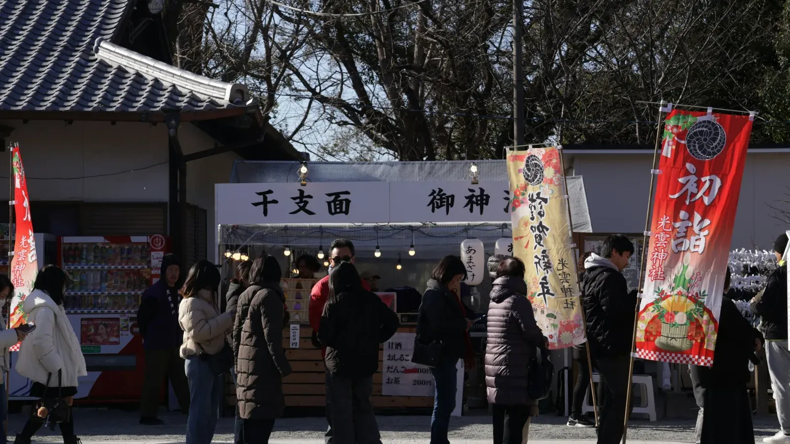

The short answer
Japan's New Year is about shrines, temples and family, not fireworks. On 31 December eat toshikoshi soba and hear the temple bells ring 108 times at midnight; from 1 to 3 January join millions for hatsumode, the first shrine visit of the year, at places like Meiji Jingu in Tokyo or Fushimi Inari in Kyoto. Expect many restaurants, small shops and some museums to close from around 29–31 December to 3 January, and book hotels and trains early: it's peak travel time for Japanese families.
What happens when
| Date | What happens |
|---|---|
| Late December | Year-end cleaning, markets selling decorations (kadomatsu, shimenawa), illuminations |
| 31 December (Ōmisoka) | Toshikoshi soba, TV music show, temple bells at midnight (joya no kane) |
| 1 January (Ganjitsu) | First sunrise (hatsuhinode), hatsumode, family meal with osechi |
| 2 January | Emperor's New Year greeting at the Imperial Palace, lucky bag sales, more hatsumode |
| 3 January | Last main holiday day; life starts returning to normal from the 4th |
New Year's Eve
Many temples let visitors join the joya no kane, the 108 strokes of the bell that clear away the past year's worldly desires. Famous ones include Zojo-ji next to Tokyo Tower and Chion-in in Kyoto, where monks swing a huge bell; queues can be very long and some temples hand out numbered tickets. Before midnight, people eat toshikoshi soba, long noodles for a long life. Big public countdown parties are rare; the Shibuya crossing countdown has been limited or cancelled in recent years, so check before you go.
Hatsumode: the first shrine visit
From midnight and through the first days of January, people visit a shrine or temple to pray for the year ahead. You'll see long but orderly queues, food stalls, and people buying omamori (amulets), drawing omikuji (fortunes, tie the bad ones to the rack) and returning last year's charms to be burned. You can join too: follow the queue, throw a coin, bow twice, clap twice, pray, bow once. Our Japanese etiquette guide explains shrine manners.
Where to go
- Tokyo: Meiji Jingu (the busiest in Japan), Senso-ji in Asakusa (lively, with street food) and Kanda Myojin. For a calmer visit go on 3 January or early in the morning.
- Kyoto: Fushimi Inari and Yasaka Shrine, where people carry home a sacred flame on New Year's Eve; Heian Shrine is roomier.
- Osaka: Sumiyoshi Taisha, one of the most visited shrines in western Japan.
- First sunrise: seaside spots, mountain tops and observation decks often have special early openings; book early.
What's open and closed
- Often closed: small family restaurants, many museums and some sights (typically from 29–31 December to 2–3 January), banks and offices.
- Open: convenience stores, chain restaurants, most hotels, shrines and temples, trains (on reduced or holiday timetables).
- Department stores usually reopen on 1 or 2 January with fukubukuro, sealed lucky bags at a discount: queues start early.
- Transport is busy around 28–30 December and 2–4 January as people travel home: reserve Shinkansen seats in advance.
New Year food
- Osechi ryōri: beautiful lacquered boxes of symbolic dishes, eaten on 1 January. Department stores and some hotels sell them.
- Ozōni: soup with mochi rice cakes; recipes change from region to region. Cut mochi into small pieces and eat slowly.
- Amazake: a sweet, warm rice drink often sold or offered at shrines.
Tips
- Book hotels months ahead; prices rise for the holiday.
- Stock up at a supermarket on 30 December if you want more than konbini food on the 1st.
- It's cold: dress warmly for queues at midnight or at dawn.
- Mind the crowds at the big shrines and follow staff instructions; keep small coins for offerings.
- Planning Tokyo days around the holiday? See our Tokyo in 3 days itinerary.
Plan New Year in Japan
Some links are affiliate links: booking through them costs you nothing extra and helps keep 687 free.
New Year in Japan, without closed doors.
In 687 Japan each day is planned with opening times, trains and the offline map, so holiday closures don't catch you out. If a place is shut or too crowded, NOW rebuilds the rest of the day.
Sources
- Japan National Tourism Organization – New Year
- Meiji Jingu (official)
- GO TOKYO – official Tokyo travel guide
- Kyoto City official travel guide
- Imperial Household Agency – New Year greeting
Checked against these official sites in November 2026. Prices and rules can change: always confirm before you travel.